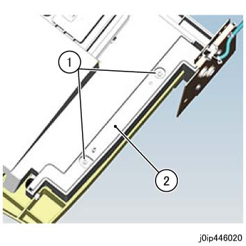
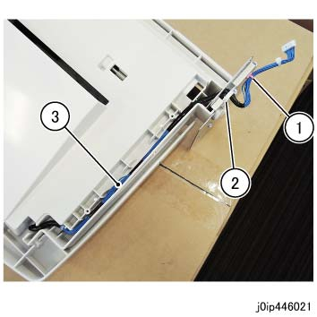
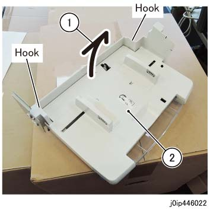
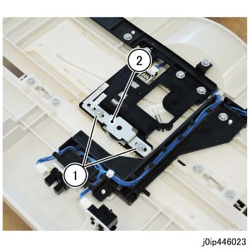
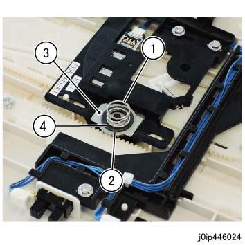
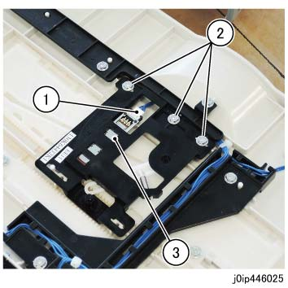
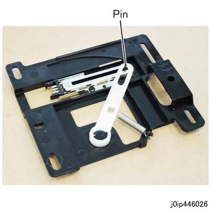

REP 46.12.1 (SCC) IP 纸盘 尺寸 传感器 组件 
参考 PL:PL 46.12
Removal

在...之后 turning 关闭/脱离 电源开关, 确认 the screen 显示 进入 关闭/脱离 和 the [电源 Saver] button 停止 blinking. 然后, 关闭 the 主 电源 开关, 确认 the [主 电源] 灯 具有 turned 关闭/脱离, 和 然后 关闭 the Breaker 和 unplug 电源插头.

静电可能损坏电气部件. 静电可能损坏电气部件. 维修时请始终佩戴腕带. If a wrist 条带 不是 可用的, touch 一些 metallic parts 在...之前 servicing to discharge the static electricity.
拆卸 IP 纸盘 组件.(REP 46.10.1)
拆卸线束 盖板. (图 1)
拆卸 Tapping 螺钉（x2）.
拆卸线束 盖板.

(图 1) ip446020
释放 线束. (图 2)
拆卸卡箍 的 线束.
释放 线束 从 卡箍.
释放 线束 从 the IP 上方 纸盘.

(图 2) ip446021
拆卸 IP 上方 纸盘 组件. (图 3)
拆卸 hook (x2) 和 打开 it.
拆卸 IP 上方 纸盘 组件.

(图 3) 拆卸弹簧 支架.
拆卸弹簧 支架. (图 4)
拆卸 Tapping 螺钉（x2）.
拆卸弹簧 支架.

(图 4) ip446023
拆卸 Pinion 齿轮. (图 5)
拆卸弹簧.
拆卸 Nylon 垫圈.
拆卸 spacer.
拆卸 Pinion 齿轮.

(图 5) ip446024
拆卸 IP 纸盘 尺寸 传感器 组件. (图 6)
断开连接器.
拆卸 Tapping 螺钉（x3）.
拆卸 IP 纸盘 尺寸 传感器 组件.

(图 6) ip446025
安装
安装时 the IP 纸盘 尺寸 传感器 组件, 确认 the 销 is 插入到 the hole of 传感器 链接. (图 7)

(图 7) ip446026